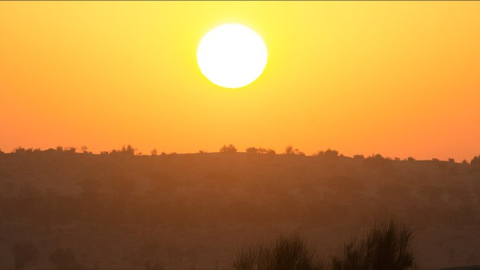
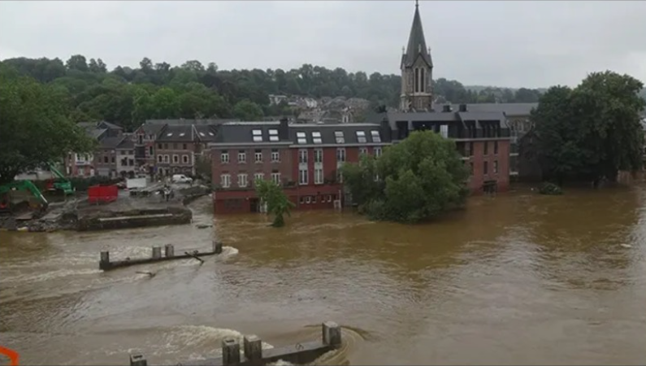

The Climate Change Foundation
Striving To Make A Better World For Future Generations


Ramifications of environmental shifts
Global Temperature is Rising
The planet's average surface temperature has risen about 2 degrees Fahrenheit (1 degrees Celsius) since the late 19th century, a change driven largely by increased carbon dioxide emissions into the atmosphere and other human activities.4 Most of the warming occurred in the past 40 years, with the seven most recent years being the warmest. The years 2016 and 2020 are tied for the warmest year on record.
Ocean Acidification Is Increasing
Since the beginning of the Industrial Revolution, the acidity of surface ocean waters has increased by about 30%.13, 14 This increase is due to humans emitting more carbon dioxide into the atmosphere and hence more being absorbed into the ocean. The ocean has absorbed between 20% and 30% of total anthropogenic carbon dioxide emissions in recent decades (7.2 to 10.8 billion metric tons per year.
Extreme Events Are Increasing in Frequency
The number of record high temperature events in the United States has been increasing, while the number of record low temperature events has been decreasing, since 1950. The U.S. has also witnessed increasing numbers of intense rainfall events.
Significant Dates Related to Climate Change
- 1970 - First ever Earth Day where organizers brought topics such as toxic waste and pollution to the world stage
- 1980 - THeat waves and droughts severly hit California bringing climate change and global warming large media coverage
- 1988 - The United Nations launched its Intergovermental Panel on Climate Change (IPCC)
- 1997 - The Rio Earth Summit was an international conference that discussed sustainable development
- 1997 - Developed nations gathered in Kyoto, Japan, to agree on a historic climate plan — it was the first agreement between nations to mandate the reduction of greenhouse gases.
- 2000 - Between 2000 and 2019, nine of the hottest years ever recorded took place, but fossil fuel consumption was still rising ever higher.
- 2014 - Pacific Islanders began to sound the alarm as rising sea levels threatened land and livelihoods.
"We have a single mission: to protect and hand on the planet to the next generation"
-- Francois Hollande